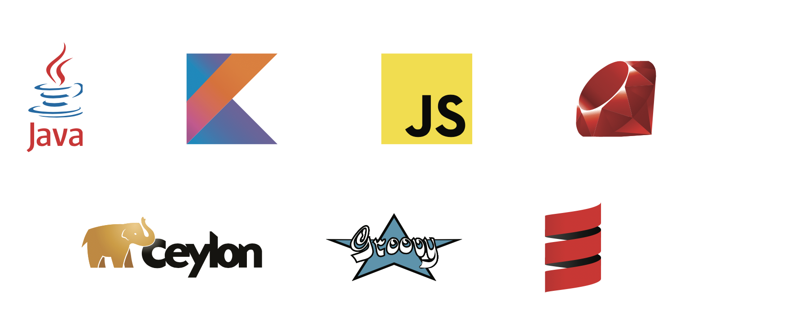
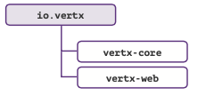
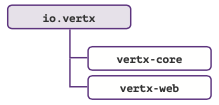
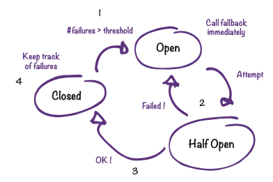
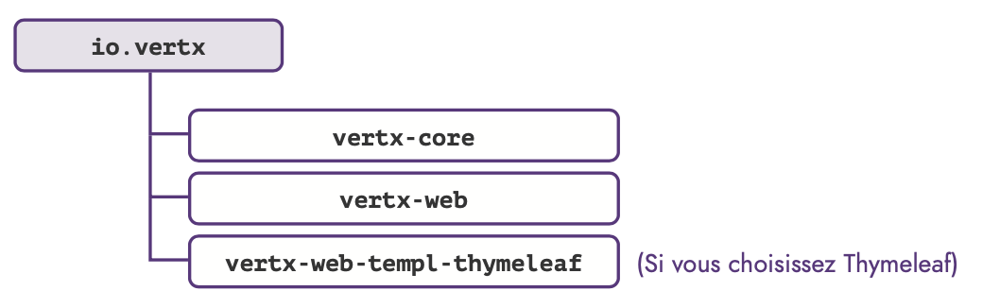
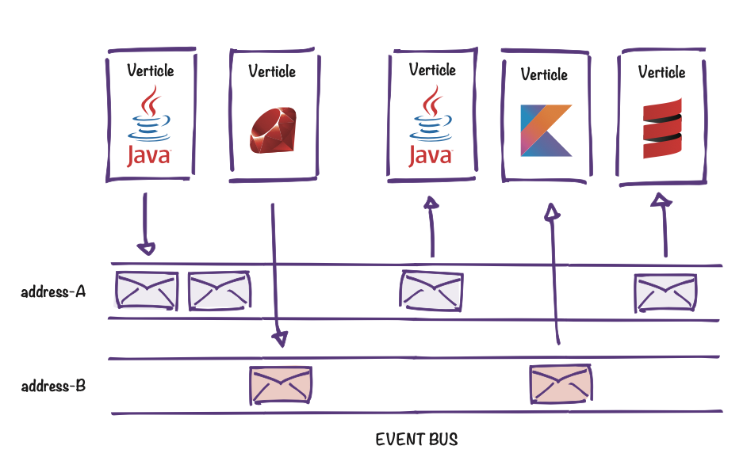
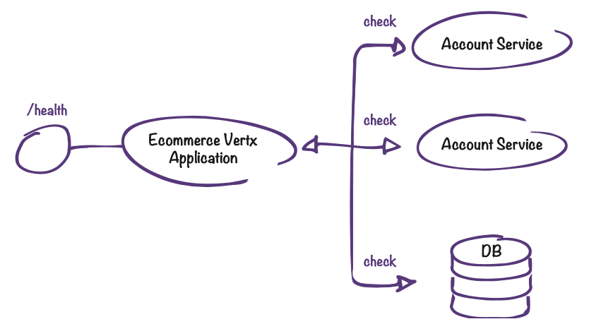

Vertx RefCard
Vertx RefCardVersion française
RefCard d'utilisation de Vertx 3.8.0
Ecrit par Mathias Deremer-Accettone
SommaireVertx, kesako ?Born to be reactiveVéritable boîte à outils événementielle, Vertx est adapté au développement d’applications qui nécessitent souplesse et performance en remplissant à merveille les 4 critères clé de l’architecture réactive.

PolyglotteUn autre aspect intéressant de Vertx : il est polyglotte. Les composants peuvent être développés en Java, Kotlin, Javascript, Ceylon, Groovy, Ruby, Scala. Vous pouvez vous mettre à vertx ou développer un premier micro service sans quitter votre langage favori, de quoi se mettre le pied à l’étrier et s’approprier les concepts. Par contre petit bémol, n’oubliez pas que seuls les composants Java sont les plus up to date...

Définitions et TerminologieAvant toute chose, petit focus sur la terminologie de Vertx.
VerticleComposant de base déployé et exécuté au sein de toute application Vertx. Un verticle a généralement pour rôle d’exposer des handlers. Une application peut exposer un ou plusieurs verticles qui ont des périmètres techniques ou fonctionnels différents. Soulignons que les verticles peuvent être de différents types : les verticles "classiques" orchestrés par l’Event Loop, et les workers. Les workers ont un cycle de vie particulier puisqu’ils sont executés à partir de threads disponibles dans un pool de threads spécifiques et non depuis l’event loop. Ils sont généralement utilisés pour exécuter du code bloquant comme les écritures en base de données s’appuyant sur JDBC.
HandlerRappelez-vous Vertx est évènementiel, il va donc falloir traiter ces évènements : c’est le rôle de vos handlers. Requête HTTP ou message, vos traitements devront ne pas être bloquant : "don’t block the event loop" !
Event Loop (Boucle d'événements)L’Event Loop est en charge de la répartition des événements entrants (ex : arrivée d’une requête HTTP) vers le bon Handler, comme le montre le schéma suivant :

Ce concept est bien connu des développeurs Node.js Cependant contrairement à Node.js, chaque instance Vertx peut maintenir plusieurs instances (threads) d’Event Loop. Par défaut le nombre d’instances correspond au nombre de core multiplié par 2.
Qui utilise Vertx ?Encore peu répandu il y a quelques années, Vertx bénéficie aujourd’hui d’une communauté conséquente et est utilisé par de nombreuses entreprises. Citons par exemple Michelin avec leur plateforme de collecte de données issues de pneus connectés, Red Hat et son Framework Quarkus qui s’appuie en partie sur Vertx, ou encore la solution d’API Management Gravitee.

Concevoir des APIs avec VertxMa première APIDépendances nécessaires
Permier handlerDéfinir un handler revient à implémenter l’interface Handler. La méthode handle est invoquée à chaque déclenchement d’un handler, et prend en paramètre un RoutingContext qui va vous permettre d’interagir sur le contexte HTTP.
public class HelloWorldHandler implements Handler<RoutingContext> { @Override
public void handle(RoutingContext routingContext) {
routingContext.response().end("Hello world !!"); }
}Le router permet de déterminer dans quels cas le handler sera invoqué (par méthode HTTP, expressions régulières...).
public class HelloVerticle extends AbstractVerticle {
@Override
public void start() {
Router router = Router.router(vertx); router.get("/hello").handler(new HelloWorldHandler()); vertx.createHttpServer().requestHandler(router).listen(8080);
}
}Par définition, un verticle est une classe qui étend AbstractVerticle, et dans laquelle est surchargée la méthode start. Le Router permet d’associer les requêtes d’URL « /hello » et de type GET au handler défini précédemment. Un serveur HTTP est ensuite créé et mis en écoute sur le port 8080.

Paramètres d'une requêteDépendances nécessaires
Query paramsLes Query params sont probablement les plus simples à récupérer, l’accès se faisant au travers d’une Multimap :
MultiMap parameters = routingContext.request().params()Implique la modification de l’url déclarée dans le Router en déclarant les paramètres avec :[nom]
router.delete("/example/:id").handler(new DeleteExampleHandler());L’accès au paramètre se fait ensuite comme suit côté Handler :
routingContext.request().getParam("id");L’accès au body d’une requête POST implique l’ajout d’un BodyHandler au router (côté verticle).
router.route().handler(BodyHandler.create());
router.post("/example").handler(new PosExampletHandler());Côté Handler l’accès au body se fera via RoutingContext.
JsonObject jsonObject = routingContext.getBodyAsJson();
JsonArray jsonArray = routingContext.getBodyAsJsonArray();
Buffer buffer = routingContext.getBody();
String body = routingContext.getBodyAsString();Lorsqu’on conçoit des APIs on a parfois l’habitude de rédiger du code et d’en générer la documentation (Swagger ou OpenApi). Comme vu précédemment, créer rapidement des routes et y associer des handlers est très simple, la documentation pouvant être écrite dans un second temps. Mais Vertx offre également une autre approche grâce à l’API Contract : ici on écrit la SwaggerDoc qui contiendra les spécificités de nos APIs, puis on passe au code. Ce mécanisme repose sur l’utilisation de la classe OpenAPI3RouterFactory, dont la fonction est de générer un router à partir du fichier YAML contenant la documentation (et donc les routes de nos APIs).
Cependant API Contract ne se limite pas uniquement à cela puisqu’il permet, entre-autre, de générer automatiquement les handlers de validation : si une requête entrante ne respecte pas le format spécifié dans la documentation, une erreur 400 sera alors renvoyée à l’appelant.
La contrainte (qui n’en est finalement pas une) est bien évidemment d’avoir une documentation rigoureusement maintenue, et les avantages sont nombreux : moins de code à écrire, BodyHandler généré automatiquement pour les requêtes POST, davantage de contrôles sur les requêtes entrantes, ...

1 - La RouterFactory analyse le fichier Swagger.
2 - Un Router est généré par la RouterFactory à partir du contenu de la SwaggerDoc.
3 - Les routes correspondant aux endpoints spécifiés dans la SwaggerDoc sont exposées et liées aux handlers (BodyHandler et ValidationHandler étant automatiquement générés).
API Contract - Mise en pratiqueDépendances nécessaires
La documentationLa documentation Swagger est écrite en YAML et suit les spécifications OpenApi. On ajoute simplement un operationId à chaque endpoint spécifié dans la SwaggerDoc (ils permettront de faire le lien avec les handlers à invoquer).
...
paths:
/users/{userId}
get:
summary: Get user by id operationId: getUserById parameters:
...
OpenAPI3RouterFactory.create(vertx, "src/main/resources/swaggerdoc.yaml", ar -> {
if (ar.succeeded()) {
OpenAPI3RouterFactory routerFactory = ar.result();
}
});OpenAPI3RouterFactory dispose d’une méthode create, prenant, entre autres, un path de fichier YAML, et un handler dans lequel seront associés opérations et handlers correspondant.
Association opérations / handlers et génération du router.//...
routerFactory.addHandlerByOperationId("getUserById", new GetUserHandler()); routerFactory.addHandlerByOperationId("createUser", new PostUserHandler()); routerFactory.addHandlerByOperationId("deleteUser", new DeleteUserHan- dler());
//...L’instance de OpenAPIRouterFactory nous permet de faire l’association entre les operationId spécifiés dans la documentation swagger et les handlers. La génération du router pourra ensuite être effectuée avec :
Router router = routerFactory.getRouter();On opte généralement pour Vertx lorsque le caractère non-bloquant d’un projet est un critère important. Il y a donc une règle à laquelle il ne faut pas déroger : ne jamais bloquer l’Event Loop. Cependant il arrive qu’il soit nécessaire de repasser sur un mode synchrone et exécuter des opérations bloquantes. Un cas type est l’écriture de fichiers de données (un export CVS par exemple).
Vertx permet de réaliser ce type d’opération avec des verticles particuliers, appelés Workers. Ceux-ci n’ont pas le même cycle de vie que les verticles classiques car non administrés par une Event Loop : un Worker est exécuté avec un thread provenant du pool de Workers.
Afin de simplifier l’allocation des threads dédiés à l’exécution des workers, Vertx administre des Pools, nous offrant ainsi la possibilité de paramétrer le nombre de threads disponibles et donc de tâches bloquantes pouvant s’exécuter en même temps.

Executer du code bloquant - PratiqueDépendances nécessaires
Méthode 1 : lors du déploiement.Comme précisé plus haut, un worker est un verticle comme les autres. La différence fondamentale est qu’il sera exécuté depuis un thread issu du pool de thread de vertx dédié aux workers et non via l’event loop.
DeploymentOptions opts=new DeploymentOptions().setWorker(true);
Vertx.vertx().deployVerticle(new ExampleVerticle(), opts);Lors du déploiement d’un verticle, il est possible de spécifier des DeploymentOptions, permettant entre autre de préciser s’il doit être déployé comme worker. Il est également possible de paramétrer le nombre maximal de threads d’un pool avec la méthode setWorkerPoolSize.
DeploymentOptions opts=new DeploymentOptions()
.setWorker(true)
.setWorkerPoolSize(3);
Vertx.vertx().deployVerticle(new ExampleVerticle(), opts);Une autre méthode pour exécuter du code bloquant consiste à utiliser la classe WorkerExecutor. Cette classe dispose d’une méthode executeBlocking permettant, comme son nom l’indique, d’exécuter des portions de code bloquant. Les blocs de code encapsulés par la méthode executeBlocking seront traités par un thread du pool de workers.
WorkerExecutor workerExecutor = vertx.createSharedWorkerExecutor ("worker-pool-example", 3);
workerExecutor.executeBlocking(future -> {
//...
}, res -> {
// ...
});Ici chaque tâche exécutée avec executeBlocking sera traitée par un thread du pool "worker-pool-example", créé avec createSharedWorkerExecutor.
Les méthodes 1 et 2 sont assez similaires : vous bénéficiez d’un pool de trois workers vous permettant d’exécuter du code bloquant. Dans sa forme la plus simple, l’exécution de code bloquant peut également se faire via la méthode Vertx.executeBlocking qui s’utilise de la même façon que l’executeBlocking de WorkerExecutor.
Circuit BreakerLe pattern Circuit Breaker permet d’assurer la résilience de l’application, en offrant des scénarios alternatifs en cas de défaillances afin de garantir une continuité de service.

Dépendances nécessaires
InitialisationCircuitBreaker breaker = CircuitBreaker.create("breaker-example", vertx,
new CircuitBreakerOptions()
.setMaxFailures(5)// (1)
.setMaxRetries(3)// (2)
.setTimeout(2000)// (3)Le circuit breaker est défini par le biais de CircuitBreakerOptions. Ici on définit le seuil d’échecs tolérés avant de passer le circuit en statut ouvert (1), le maximum de tentatives d’exécution d’une requête avant d’incrémenter le compteur d’échecs (2), et le temps de réponse maximum au-delà duquel on considère la requête en erreur (3).
Gestion des cas d'erreursbreaker.executeWithFallback(future ->
WebClient.create(vertx)
.get(8080, "address", "/test")
.send(response -> { /*...*/ })
), fallback -> { System.out.print("Target application can’t be called");
}).setHandler(ar -> System.out.print("Success"));Solution idéale pour construire rapidement des APIs légères et réactives, Vertx permet également de servir du contenu HTML.
Dépendances nécessaires
Exposer des ressources statiquesServir des ressources statiques (comme les fichiers css ou les images) nécessite l’utilisation d’un StaticHandler qui, en fonction des demandes, transmettra les fichiers stockés dans un répertoire du filesystem. Par défaut ce répertoire est webroot, mais il est tout à fait possible de pointer sur un autre répertoire via la méthode setWebRoot du StaticHandler.
router.route("/static/*").handler(StaticHandler.create());Tout comme les réponses retournées par des APIs, servir du contenu HTML se fait avec routingContext.response().end(...). Le contenu renvoyé ici est passé en paramètre de la méthode end et sera dans ce cas du code HTML.
Le templatingPlusieurs moteurs de templates peuvent être utilisés conjointement avec Vertx afin de rendre un contenu HTML (Thymeleaf, Freemarker, Jade, ...).
router.get("/page").handler(
routingContext -> {
ThymeleafTemplateEngine engine = ThymeleafTemplateEngine. create();
engine.render(routingContext, "templates", "page.html", res -> {
if (res.succeeded()) {
routingContext.response().end(res.result());
}
});
});Outre le RoutingContext, la méthode render de ThymeleafTemplateEngine prend en paramètre le nom du répertoire contenant les templates, le nom du template à utiliser et un handler à exécuter (en général cet handler renverra le code HTML généré).
Stocker des données : sessionsDépendances nécessaires Types de stockage
Types de stockageLe stockage des données en session passe par la création d’une instance de SessionStore. Cette classe permet de spécifier le nom de la map qui contiendra les données de session.
SessionStore sessionStore = LocalSessionStore.create(vertx, "map");Dans sa forme la plus simple, le stockage se fait localement au sein d’un même serveur HTTP. Cependant en production, plusieurs instances d’un même verticle peuvent exister au sein d’un même cluster. Les sessions sont donc amenées à être partagées entre plusieurs serveurs HTTP. Dans ce cas de figure, il sera nécessaire d’utiliser ClusturedSessionStore et non LocalSessionStore. Les sessions seront alors stockées dans une map distribuée.
Bien que tout à fait faisable avec Vertx, le stockage des données en session est cependant à éviter : pour suivre les principes de scalabilité et de résilience il est conseillé de favoriser le stateless.

Accès aux donnéesL’accès aux données de session suit le même schéma que l’accès au body des requêtes POST. On déclare le SessionHandler, qui sera associé au router.
SessionHandler sessionHandler = SessionHandler.create(sessionStore); router.route().handler(sessionHandler);L’accès aux données pourra alors être opéré par le biais d’un objet Session, obtenu via un appel au RoutingContext. Session se manipule comme une HashMap classique.
Session session = routingContext.session();
session.put("key", "value"); Mise en oeuvre
Mise en oeuvreDe la même façon que pour les sessions, l’accès aux données stockées sous forme de cookies se fait par le biais d’un handler spécifique : CookieHandler.
router.route().handler(CookieHandler.create());Le RoutingContext permettra de stocker de nouveaux cookies et de manipuler leurs données.
routingContext.addCookie(Cookie.cookie("cookie-example", "value"));
//...
Cookie cookieExample = routingContext.getCookie("cookie-example");
String value = cookieExample.getValue();La création d’un formulaire exploitable par Vertx n’a pas de prérequis particuliers, seul l’attribut name des inputs est essentiel : c’est avec son nom qu’on pourra rechercher un input et accéder à sa valeur.
<form method="post">
<input type="radio" id="input1" name="radio1" value="A"/>
<input type="radio" id="input2" name="radio2" value="B"/>
<input type="radio" id="input3" name="radio3" value="C"/>
</form>Comme précisé dans la partie précédente le nom de l’input est important, car il permet de récupérer la valeur saisie avec la méthode getFormAttribute de HttpServerRequest (qui prend en paramètre le nom de l’input).
routingContext.request().getFormAttribute("radio1")Une autre méthode (formAttributes), également fournie par HttpServerRequest, offre la possibilité de récupérer l’ensemble des inputs sous la forme d’une MultiMap.
L'Event Bus, le système nerveux de VertxEvent Bus - ThéorieVéritable système nerveux de Vertx, l’event bus permet à différentes entités d’une application de communiquer entre elles via échange de messages (entités qui peuvent se trouver, ou non, dans la même instance Vertx). Un des principaux intérêts est que les parties communicantes peuvent être écrites dans des langages différents, mais qu’il est également tout à fait envisageable de lier du code Javascript, exécuté dans un navigateur, à l’Event Bus (via SockJs par exemple).
L’envoi de messages sur le bus se fait sur une adresse, qui n’est ni plus ni moins qu’une simple chaine de caractères. Chaque consumer (qui est généralement un verticle) reçoit et traite les messages en s’abonnant à cette adresse (modèle publish / subscribe).
Il supporte aussi le modèle point à point et request/response. On retrouve donc l’aspect "message oriented" du manifeste reactive. Ce bus va nous permettre de découpler les composants, et de profiter d’une scalabilité horizontale (un verticle du cluster va traiter un message).

Event Bus - En localDépendances nécessaires Réception des messages (Abonnements)
Réception des messages (Abonnements)@Override
public void start() {
// ...
vertx.eventBus().consumer( "address-A", message -> System.out.println(message.body()));Dans cet exemple on affiche le contenu du message réceptionné à l’adresse "address-A".
Envoi des messagesLa publication d’un message peut se faire de deux façons :
Ces deux méthodes prennent en paramètre l’adresse de publication et le contenu du message.
vertx.eventBus().publish("address-A", "Message content");
vertx.eventBus().send("address-A", "Message content");Dans sa forme la plus simple, la communication inter-verticle se fait au sein de la même instance Vertx sans aucune complexité. Cependant dans le cas d’applications distribuées, plusieurs instances Vertx peuvent coexister sur le réseau et être exécutées sur des JVM différentes.
Or chaque instance gère son propre Event Bus. Il est donc nécessaire de s’appuyer sur un Cluster Manager qui permettra de grouper les instances et de constituer un seul Event Bus partagé.

Dépendances nécessairesMise en oeuvre//...
ClusterManager mng = new HazelcastClusterManager();
VertxOptions options = new VertxOptions().setClusterManager(mng); Vertx.clusteredVertx(options, res -> {
if (res.succeeded()) {
Vertx vertx = res.result(); vertx.eventBus().publish("address-B", "Message content");
}
});On instancie un HazelcastClusterManager qui sera ensuite utilisé pour initialiser le cluster. Si c’est un succès, la suite des opérations sera la même que pour une exécution locale. Vertx supporte d’autres Cluster Manager comme Zookeeper (ZookeeperClusterManager du module vertx-zookeeper), Infinispan (InfinispanClusterManager du module vertx-infinispan), Ignite (IgniteClusterManager du module vertx-ignite). Qu’il soit local ou distribué l’event bus permet donc aux composants d’une application d’échanger facilement des données de manière asynchrone et non-bloquante, et ne nécessite pas l’intervention d’un broker de messages.
Gérer efficacement les micro servicesServices Discovery - ThéorieChaque entité d’un système peut être vue comme un service. Qu’il s’agisse de endpoints HTTP, de sources de données ou d’un proxy, chaque service peut être décrit et référencé dans l’annuaire dans le but d’être appelable par les autres services sans que ceux-ci n’aient connaissance de l’adresse de ce service. Tout comme pour l’Event Bus, ce mécanisme, appelé découverte de services, garantit donc une certaine transparence de localisation.

Ce schéma illustre ce concept : les endpoints d’Account Service (exposés par Account Verticle) sont référencés dans le Service Registry. Ce dernier est observé et utilisé par le Customer Service pour récupérer l’adresse d’Account Service et donc déterminer comment appeler les endpoints exposés par Account Verticle. Vertx propose ses propres classes permettant de monter un annuaire de service, mais offre également des connecteurs pour interagir avec d’autres solutions (Consul par exemple, via le client mis à disposition par vertx-consul-client).
Services Discovery - Mise en pratiqueDépendances nécessairesCréer l'annuaire de servicesLa création d’un annuaire de services avec Vertx implique l’instanciation d’un objet ServiceDiscovery :
ServiceDiscovery discovery = ServiceDiscovery.create(vertx);La publication d’un service (ci-dessous un endpoint HTTP) revient à ajouter un Record dans l’annuaire. Chaque service référencé est caractérisé par un nom, une localisation, et optionnellement des métadonnées.
Record record = HttpEndpoint.createRecord("service-name", "address", 8080, "/test");
discovery.publish(record, ar -> {
if (ar.succeeded()) {
System.out.println("Service published");
}
});Il est possible de rechercher des services en utilisant des filtres (applicables sur différentes caractéristiques d’un service) :
discovery.getRecord(r -> r.getName().equals("service-name"), ar -> {
if (ar.succeeded()) {
System.out.println("Service found");
}
});L’appel au service pourra ensuite se faire comme suit (la méthode getAs prenant en paramètre le type de service à récupérer) :
if (ar.succeeded()) {
Record record = ar.result();
ServiceReference serviceReference = discovery.getReference(record);
HttpClient client = serviceReference.getAs(HttpClient.class);
client.get("HTTP://address:port/resource").end();
// ...
serviceReference.release();}Vertx Unit est un module apporté par Vertx, se basant sur des frameworks de tests existants et permettant d’écrire des tests unitaires asynchrones.
Dépendances nécessairesEcrire une suite de testsEn règle générale, tester son application revient à écrire un ensemble de cas de tests. La classe TestSuite simplifie cette démarche en apportant quelques méthodes utiles pour grouper ces cas de tests et séquencer leurs exécutions.
Instancier une TestSuiteLa création d’un objet TestSuite passe par un appel à la méthode create, prenant en paramètre une chaine de caractères (le nom que l’on souhaite donner à la TestSuite).
TestSuite testSuite = TestSuite.create("test-suite-example");L’instance de TestSuite est utilisée pour déclarer des cas de test. La méthode test prend en paramètre le nom du test, ainsi qu’un callback à exécuter.
testSuite.test("test1", context -> {
//...
});La classe TestSuite dispose d’une méthode run, qui permet de lancer l’exécution.
testSuite.run() ;Il est également possible de passer des paramètres à cette méthode, et notamment une instance de TestOptions. Cette classe est entre autres utilisée pour déclarer des "reporters" permettant d’exporter les résultats des tests vers des sorties diverses.
ReportOptions fileReport = new ReportOptions().setTo("file:.").setFormat("simple");
testSuite.run(new TestOptions().addReporter(fileReport));Dans l’exemple précédent, une instance de ReportOptions permet de spécifier que la sortie d’exécution des tests sera un ensemble de fichiers (l’argument de setTo aura alors la forme file:$DIRECTORY où $DIRECTORY sera remplacé par le chemin où seront sauvegardés les fichiers). Il est possible de spécifier d’autres sorties en changeant l’argument de la méthode setTo par :
Chaîner ses tests Vertx UnitComme nous l’avons vu dans la partie précédente, l’écriture de cas de tests avec Vertx Unit est assez triviale. Mais ce module ne se limite pas à l’écriture de cas de tests autonomes : il est possible de construire de véritables scénarios en chaînant les cas de tests.
Dépendances nécessairesMise en oeuvreL’enchainement logique des tests implique que ceux-ci puissent partager des objets. Pour cela les callbacks ont à disposition un context, s’utilisant comme une Hashmap. On peut donc stocker une donnée lors de l’exécution d’un cas de test, et l’utiliser durant l’exécution du suivant.
testSuite.before(context -> {
context.put("result", 10);
}).test("increase-result", context -> {
int newResult = ((int)context.get("result")) + 8;
context.assertEquals(newResult, 18);
context.put("result", newResult);
}).test("divide-result", context -> {
int newResult = ((int)context.get("result")) / 2;
context.assertTrue(newResult < 10);
context.put("result", newResult);
}).after(context -> {
//...
});Dans l’exemple précédent, on stocke dans le context un entier "result" depuis le callback de la méthode before (méthode utilisée pour initialiser une TestSuite avant son exécution). La valeur de "result" est ensuite mise à jour, testée et restockée par le premier cas de test "increase-result". Le second cas de test "divide-result" sera lancé une fois que "increase-result" aura terminé son exécution et pourra à son tour exploiter la valeur de "result". C’est également l’objet context qui fournit les méthodes d’assertions.
Déployer et administrerLe CLI VertxVertx dispose d’une interface en ligne de commande très pratique permettant de lancer des verticles en précisant des options de déploiement.
Installation1 - Installer une JDK 8 sur le poste de développement (impératif si on souhaite compiler des verticles écrits en Java).
2 - Télécharger la dernière version de Vertx depuis HTTPS://vertx.io/download/.
3 - Dézipper l’archive.
4 - Ajouter le bin contenu dans le répertoire obtenu au PATH de la machine.
Quelques commandes utilesCompiler et déployer un verticle
$ vertx run HelloVerticle.javaDéployer 3 instances d'un verticle
$ vertx run HelloVerticle.java -instances 3Déployer un worker
$ vertx run HelloVerticle.java -workerSpécifier des configurations lors du déploiement
$ vertx run HelloVerticle.java -config /path/to/config.jsonDéployer un verticle dans un environnement clusterisé
$ vertx run HelloVerticle.java -clusterVertx créera automatiquement un Event Bus pour permettre la communication inter-verticles.
Redéployer automatiquement à chaque modification
$ vertx run HelloVerticle --redeploy="**/*.class" --launcher-class=io.vertx.core.LauncherL’option -redeploy prend ici en paramètre une regex Ant-style permettant d’indiquer l’ensemble de fichiers à observer.
Lancer un verticle en tâche de fond
$ vertx run HelloVerticle start — -vertx-id=hello-verticleOn utilisera list et stop pour lister et stopper les verticles.
Configurations et logsDépendances nécessairesConfigurationsVertx supporte différents types de sources de données depuis lesquelles il est possible d’extraire les configurations utilisables par nos applications, et notamment les fichiers (JSON,YAML,...), les variables d’environnement,les endpoints HTTP ou encore les dépôts Git. Pour d’accéder aux configurations stockées à la fois dans un fichier et dans des variables d’environnement, un objet ConfigRetrieverOptions doit être défini :
ConfigStoreOptions fileStore = new ConfigStoreOptions()
.setType("file")
.setConfig(new JsonObject().put("path", "config-file.json"));
ConfigStoreOptions envStore = new ConfigStoreOptions().setType("env"); ConfigRetrieverOptions options = new ConfigRetrieverOptions()
.addStore(fileStore)
.addStore(envStore);Il sera ensuite utilisé pour récupérer un JsonObject contenant l’ensemble des configurations (à l’instar d’une HashMap, chaque valeur du JsonObject est accessible via une clé) :
ConfigRetriever.create(vertx, options).getConfig(ar -> {
if (ar.succeeded()) {
JsonObject config = ar.result();
}
});L’implémentation par défaut de l’API de logging fournie par Vertx s’appuie sur java.util.logging (d’autres frameworks de logging tel-que Log4j sont également supportés). Au démarrage de l’application, Vertx ira scruter le fichier vertx-default-jul-logging.properties situé sous /src/main/resources. Le logging se fera alors de façon très classique.
Logger logger = LoggerFactory.getLogger("ExampleVerticle")
//...
logger.error("Error during Verticle initialization");Lors du build d’une application Vertx, un fat-jar est généré et peut être lancé via la commande java -jar. Cependant durant les phases de développement, cette méthode peut être assez contraignante. N’ayez crainte, il existe d’autres techniques pour construire, déployer et lancer des verticles.
En utilisant le plugin mavenLa méthode la plus simple pour lancer localement une application Vertx est d’utiliser le plugin vertx-maven-plugin. Une fois ajouté au pom.xml, lancez la commande suivante pour démarrer l’application :
$ mvn vertx:startEt pour la stopper :
$ mvn vertx:stopVertx fournit la classe Launcher, utilisable avec maven-shade-plugin. Après avoir ajouté le plugin au pom.xml, il est nécessaire de spécifier dans sa configuration quelle sera la classe utilisée comme Launcher et quel est le verticle à lancer.
<manifestEntries>
<Main-Class>io.vertx.core.Launcher</Main-Class>
<Main-Verticle>ExampleVerticle</Main-Verticle>
</manifestEntries>Les verticles sont déployables depuis le code de l’application :
Vertx.vertx().deployVerticle(new ExampleVerticle()); Préciser des options de déploiement
Préciser des options de déploiementLes DeploymentOptions permettent de spécifier divers critères utilisés par Vertx lors du démarrage des verticles, notamment le nombre d’instances d’un même verticle.
DeploymentOptions opts=new DeploymentOptions().setInstances(3);
Vertx.vertx().deployVerticle(new ExampleVerticle(), opts);Ici les trois instances d’ExampleVerticle écouteront le port 8080. La redirection des requêtes sur telle ou telle instance est automatiquement réalisée par Vertx (stratégie Round Robin).
Externaliser les options de déploiementsLes options et le déploiement à proprement parler peuvent être découplés. En effet, les informations comme le nombre d’instances d’un verticle ne sont que des paramètres pouvant être centralisés dans un fichier de configuration Json.
{
"main": "com.ineat.ExampleVerticle",
"instances": 3,
"worker": true
}Le toolkit d’Eclipse simplifie une nouvelle fois la vie du développeur en mettant à disposition la classe ServiceFactory qui, une fois ajoutée à l’instance Vertx, se chargera de collecter les options de déploiement spécifiées dans le fichier de configuration.
vertx.registerVerticleFactory(new ServiceVerticleFactory());En supposant que le fichier contenant les options de déploiement d’ExampleVerticle se nomme config-example-service.json, le déploiement se fera alors comme suit :
vertx.deployVerticle("service:config-example-service");Le principal intérêt d’un healthcheck est de pouvoir surveiller le statut de l’application. Il permet aussi de contrôler l’état des briques liées à cette application (autres services, bases de données, ...) ce qui permettra d’établir un diagnostic précis en cas de panne et d’identifier quel composant pose problème.
Contrôler l’état de santé d’une application est facile grâce au HealthCheckHandler (fourni par le module vertx-health-check). Cet handler est personnalisable puisqu’il est tout à fait possible d’ajouter des contrôles sous la forme de procédure en utilisant la méthode register (prenant en paramètre une chaine qui permettra d’identifier cette procédure, et la procédure elle-même).
HealthCheckHandler healthCheckHandler = HealthCheckHandler. create(vertx);
healthCheckHandler.register("control-db", future -> {
dbClient.getConnection(connection -> {
if (connection.failed())
future.complete(Status.KO());
else
future.complete(Status.OK());
});
healthCheckHandler.register("control-payment-service", future -> {...}); router.get("/health").handler(healthCheckHandler);Les healthchecks sont des solutions fiables pour contrôler si une application est disponible. Cependant, il est possible d’aller plus loin en exposant des données utiles grâce aux métriques : la consommation CPU, la mémoire utilisée, le nombre de verticles déployés, ... Micrometer est une solution parmi d’autres et pour laquelle Vertx fournit un module. Ainsi vertx-micrometer-metrics contient tout le nécessaire pour remonter des métriques qui pourront être exploitées par des solutions comme Prometheus ou InfluxDb, et présentées dans des dashboard Grafana.
 Exposer des indicateurs - Mise en pratiqueDépendances nécessaires
Exposer des indicateurs - Mise en pratiqueDépendances nécessaires Activer la récupération des métriques
Activer la récupération des métriquesAfin d’autoriser la récupération de métriques Micrometer par Vertx, on spécifie les VertxOptions nécessaires.
Vertx vertx = Vertx.vertx(new VertxOptions().setMetricsOptions(
new MicrometerMetricsOptions()
.setPrometheusOptions(new VertxPrometheusOptions()
.setEnabled(true))
.setEnabled(true))
);La récupération des métriques peut se faire de diverses façons, la plus commune étant en appelant un endpoint dédié. Dans le cas où Prometheus est utilisé, le handler connecté à l’url /metrics sera un PrometheusScrapingHandler. Lors d’instanciation de cet handler, il est possible de spécifier le nom la MeterRegistry (objet auprès duquel les différentes sondes, appelées Meter, vont s’enregistrer). Si aucun nom n’est précisé, une registry par défaut sera créée.
router.route("/metrics").handler(PrometheusScrapingHandler.create ("user-metrics-registry")) ;Les sondes sont référencées dans une MeterRegistry accessible depuis presque n’importe où dans le code grâce à la classe BackendRegistries, sa méthode getNow pouvant prendre en paramètre le nom de la registry passé lors de la création du PrometheusScrapingHandler. Il est tout à fait envisageable de référencer et utiliser des sondes depuis les handlers (par exemple pour comptabiliser le nombre d’appels à un endpoint sur un intervalle de temps donné).
MeterRegistry reg = BackendRegistries.getNow("user-metrics-registry"); Counter counter = Counter.builder("user.api.number.calls").regis- ter(reg);
//...
counter.increment();Alors que faut il retenir de Vertx ? Simplement qu’il permet de développer rapidement des applications réactives offrant d’excellentes performances, mais en restant simple à appréhender.
En effet, quel que soit le framework ou toolkit, il n’a réellement d’intérêt que s’il est efficace et simple a utiliser. C’est une mission accomplie pour Vertx, qui a su en quelques années rassembler une importante communauté, mettre à disposition une documentation complète et parfaitement à jour, tout en fournissant régulièrement de nouvelles features très pratiques.
Soulignons enfin que Vertx fut également un des principaux composant employé dans le développement de Quarkus, projet visant, entre autres, à remettre le langage Java dans la course à la performance.
Vertx est donc LE toolkit que tout developpeur Java devrait connaître, alors n’hésitez plus et lancez vous !
RéférencesA propos d'IneatConvaincu que l’innovation constitue la meilleure réponse aux évolutions de notre société, Ineat a pour vocation de guider et accompagner les entreprises dans leur processus de transformation digitale en les aidants à s’approprier les nouvelles technologies.
Ce guide a été écrit par Mathias Deremer-Accettone
Version : V1.0.0
Date d’édition : Novembre 2019
Impression : Pixartprinting
Merci à nos relecteurs : Emmanuel Peru, Ludovic Dussart, Mehdi Slimani, Lucas Declercq
La direction artistique et les illustrations sont l’œuvre d’Ineat Studio